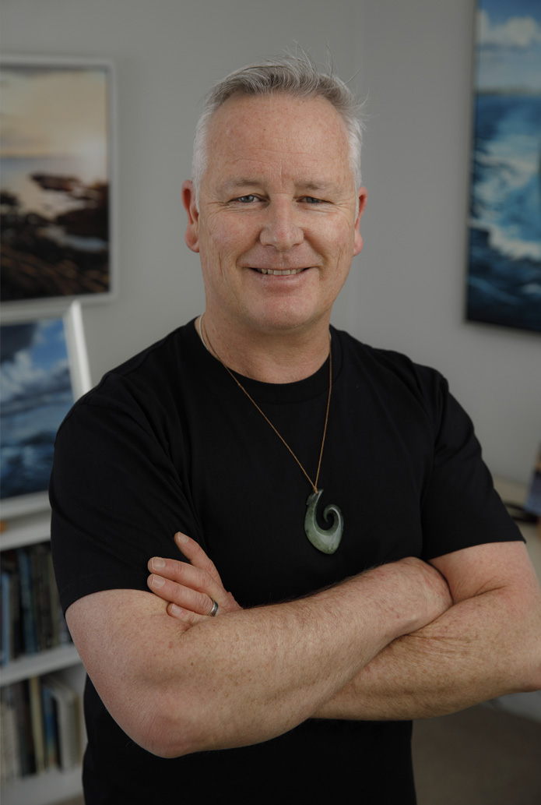

My art is an eclectic collection, reflecting my multifaceted inspirations and interests. On the one side there is technology with a strong pull towards maritime subjects, with a great influence from growing up in a Naval family and having served in the Royal Australian Navy myself.
On the other side is fantasy work which blends into illustration with some subjects that are appealing to a much younger audience. These two sides usually fight for the opportunity to become a reality on canvas. This has led me to having at least two streams of work on at any one time.
The thread that brings my work together is the desire to reproduce the work in a highly detailed and realistic manner, whether it be graphite pencil or acrylics. I've delved into digital art, but I love the tactile interaction with paint and pencil and revel in unplanned mistakes that can create a new style or quality to my work.

Born in Auckland, New Zealand, Darrell moved to Perth in the mid-1980s with his family. Although he had a passion for drawing and painting from an early age, he followed in his parents' footsteps and pursued a career in the Navy.
As a signalman, Darrell served on several Australian Naval ships, including HMAS Westralia and HMAS Swan. In between watches, Darrell continued with his passion for drawing, leading him to produce art works frequently mistaken for photographs. One of his first photo-realistic pencil drawings was of HMNZS Waikato, a ship that is close to his family's heart; his father was part of the commissioning crew and both Darrell and his brother were christened on-board.
After leaving the Navy in 1997, Darrell traveled throughout Europe and the UK, returning to Australia to enrol at the WA School of Art, Design and Media. Graduating in 2002 with an Advanced Diploma in Graphic Design and Multimedia, Darrell continued with his drawing and expanding his range of prints.
Over the years he moved from pencil to oils and acrylics. The National Maritime Museum of Australia purchased two of his pencil drawings for their collection. The West Australian Cricket Association commissioned an oil painting of HMAS Sydney II, as part of their 'Lest we forget' display. This painting has subsequently appeared in several publications on the Sydney.
Another side of his work includes a large range of illustrations for the Western Australian Department of Environment and Conservation. These adorn promotional material, activity books for kids, signage and even playground equipment.
Darrell now resides in Melbourne, Australia with his wife and children and continues to produce works for clients around the world.